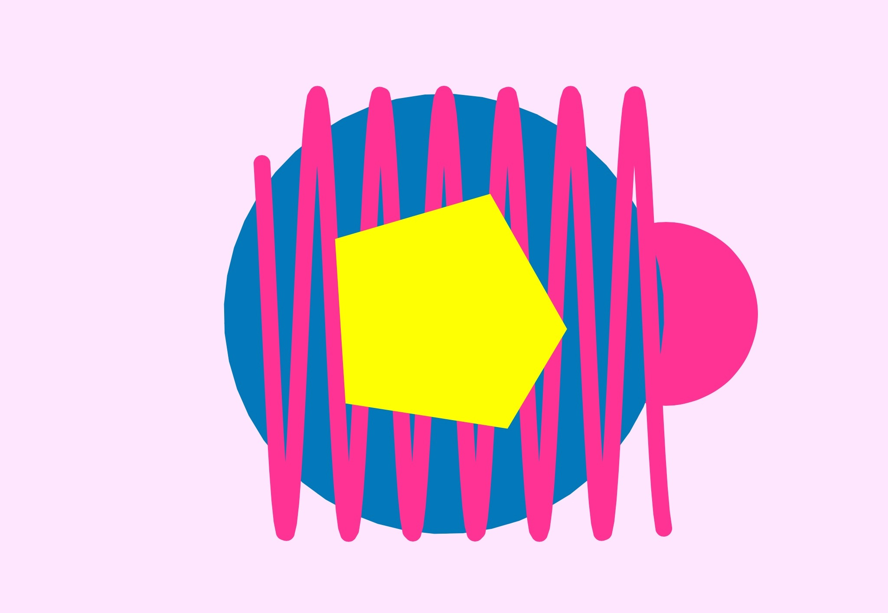

Design Scenario analysis & response:
The design scenario explores how many browser-based instruments are powerful tools for creating music and are often designed for adults or experienced users who mostly rely on written instructions or their understanding of musical concepts to create compositions. While this offers a high level of creative freedom, they are not accessible, engaging or comprehensible for younger users such as toddlers, as many of these interfaces require users to interpret text-based instructions, navigate menus and understand musical concepts before they can interact with the instrument. For toddlers whose language and motor skills are still developing, this can be a barrier that discourages them from using these tools.
Project Overview:
My project is a browser based musical instrument designed as a toy for toddlers and younger children with minimal language skills. The experience will provide a playful and visually engaging environment where children are encouraged to explore different sounds through a simple keyboard interaction. Unlike traditional instruments that require users to understand musical concepts, the project will let children express their creativity and discover music through experimentation. Using a keyboard, children will be able to experiment with a soundboard that produces different sound effects when interacted with. The combination of sound and visual feedback will allow them to understand the relationship between their actions and its output, leading them to engage and freely combine different audios together without the fear of making mistakes. To incorporate the technique of randomness, the instrument will have a function to create a random beat using the provided sounds. This will allow children to hear new sound combinations which adds an element of surprise and discovery, further encouraging curiosity and experimentation.
The project responds to the scenario by making music exploration more accessible to children who don’t have the language knowledge yet to navigate traditional browser-based instruments. Its purpose is to allow children to freely experience different sounds and instruments and to be able to create their own music independently. The design prioritises creativity, exploration and curiosity rather than skill or knowledge, and helps children understand cause and effect without the fear of mistakes, while the colourful visuals keep them entertained. Overall, this project aims to move away from the traditional concept of web-based instruments being used as a tool that need to be learned, and instead, simply allowing younger audience to freely explore the world of music.
Project Framing:
The concept of this project is to prioritise open ended exploration and free play through experimentation and discovery. When children interact with the keyboard, they will quickly be able to grasp that their actions created the response, encouraging them to interact with other buttons on the keyboard. The visuals displayed will be simple to avoid sensory overload, yet playful, colourful and friendly. The visuals will consist of different colours, basic shapes and some form of animation to create an immersive environment that is exciting for young children.
The project will be developed as a browser based interactive experience which will be available from any device directly through a website. The interactions will be through a standard computer keyboard with the required actions only being clicking on letter keys. This prevents younger children such as toddlers from having to navigate multiple motor skills such as dragging, clicking and pressing. To incorporate the extended technique of randomness, as required by the project brief, the instrument will have a function to create a random beat using the provided sounds. This will allow children to hear new sound combinations which adds an element of surprise and discovery, further encouraging curiosity and experimentation.
Furthermore, the interface will not rely on text and avoid any complex menus, settings and controls which could create a barrier for the target users to effectively use the site. The project will rely solely on audio and visual communication to help make the experience more accessible to the users with minimal language skills.
Overall, the project excludes any complex music producing features and avoids requiring children to understand any musical concepts before they interact with the instrument. This project prioritises a design palette that is centred around minimalist, playful sensory feedback and ensures that the experience stays appropriate for its targeted audiences.
Interaction Design Analysis:
1. Patatap is a browser based interactive soundboard that lets users create sounds by pressing the different keys on their keyboard. Each letter key makes a different sound, while specific animations are shown on the screen in response to the user's input. A key strength of Patatap that inspired my project was its use of feedback as it produces engaging auditory and visual responses, keeping users entertained and curios to create beats. Another strength that inspired my design was its simple use of the keyboard to turn use as a MIDI, requiring minimal and easy interactions that can be used by toddlers.

2. Blob Opera allows its users to primarily focus on both pitch and notes through its simple drag interaction. Users can use the drag effect from their computer trackpad to hold onto 1 of 4 characters which can then be pulled vertically to raise the pitch, and horizontally to change the notes they sang. The interface also allows users to control multiple blobs at once, encouraging them to explore how different notes can sound together. The site is easy to navigate for all ages and appeals to the younger audience through its vibrant colours as well as its characterisation. Each blob has its own has its own colour, appearance and vocal range, giving it a unique personality. Their exaggerated and expressive movements also make the experience feel more like characters than controlling an instrument. This influenced my project by encouraging me to use playful visual characters that would apply to toddlers and can make the instrument feel more like a fun toy, rather than a tool.